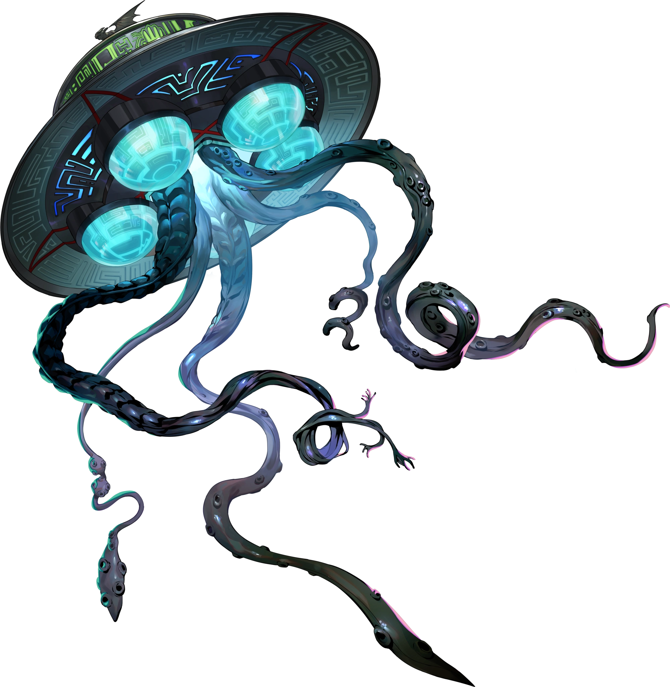

Introduction
Futaba Sakura is the seventh unlockable character you get in Persona 5 Royal. She is in Shujin Academy however rarely goes
to school because she mainly stays inside her house. She is a hacker who was originally against the Phantom Thieves before
joining them. She also doesn't fight but acts as a hacker.
Persona Unlocking
Futaba enters her own palace. She then gets guilt that it is her fault her mother died. however, after meeting the spirit of her mother and getting comfort from her she unleasheds her persona Necronomicon.
Gallery
Necronomicon
Oracle(apperence in metaverse)
Futaba Sakura
Facts about Futaba Sakura
- Code Name: Oracle
- DOB(date of birth): February 19, 2000
- Age: 16
- Height: 152 cm (5'0")
- Primary Tool: None
- Secondary Tool: None
- Arcana(personality): Hermit
- Persona(asssistant): Necronomicon